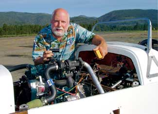
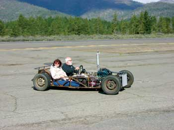
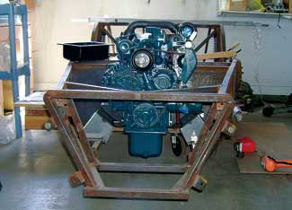
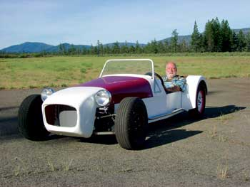
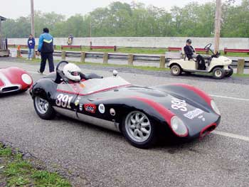
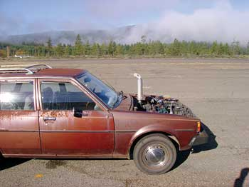
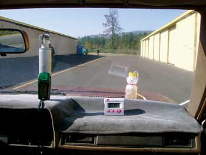

Here Comes The 100-Mpg Car
Without any whiz-bang technology, we’re building a superefficient car for the Auto X Prize competition.
By Jack McCornack
August/September 2008
There’s a contest underway to build 100-mile-per-gallon (mpg) cars that are practical and feasible for mass-production. Known as the Progressive Insurance Automotive X Prize, it will award $10 million to whomever can crack the 100-mpg puzzle and best demonstrate the achievement during cross-country races. When the races start in 2009, I’ll be behind the wheel of a sporty two-seater that will be as cool as it will be fuel-efficient. Through a series of Mother Earth News articles and updates online, you can come along for the ride.
Who are you, and how did you get this awesome gig?
I’m Jack McCornack, and I have a history of tinkering with “alternative” vehicles. I was an energy conserve-and-economize zealot before Jimmy Carter wore a cardigan. In the early ’70s, when we were only allowed to buy gas every other day, I drove past the long gas lines in a homemade contraption that got 125 mpg. In the late ’70s, while working with Mother Earth News, I made aircraft that got 40 mpg on home-brewed alcohol, and I helped with the tilting, three-wheeled 3VG concept vehicle. (You can read the original articles about these projects in The Flight of the Microlights and Leaning Toward the Future.) These days, my latest company, Kinetic Vehicles, supplies parts (and sage advice) for lightweight do-it-yourself sports cars.
After a more than 30-year snooze, our country is waking up to the fact that treehuggers of yore were right - we’re running out of easy oil, if not all oil. So now the time is right for me to tinker anew and throw my hat into the Auto X Prize ring. The timing couldn’t be better: I’ve been building another cheapskate vehicle that just might fill the bill.
$10 million!! What is this X Prize thing?
The X Prize Foundation has an intriguing system of sparking technological breakthroughs: “revolution through competition.” The basic idea is to set lofty goals and give big money to the individuals or companies who best meet those goals. The contests are named after the people or companies who put up the prize money, which is how Progressive Insurance got in on the act for this X Prize. (For more on the Auto X Prize, see Racing to a Revolution.)
The 100-mpg goal of the Auto X Prize is appealing for many reasons. For one thing - stop me if you’ve heard this already - consumption of fossil fuels is damaging our environment. And I don’t know about you, but I seem to be spending a lot on gas these days. I know I could spend that money more wisely on something else.
So I’m gung-ho for the Auto X Prize, and I hope it stimulates the breakthroughs that 100 mpg will demand. But meanwhile I wonder ... how close can I get to 100 mpg a breakthrough? What if I focus on here-and-now technology instead of later-and-wow solutions? What if I make a car that others could make for themselves? Last and most daring, what if I give it a tight budget and make the car pay for itself with the money it saves on gas? Enter MAX - Mother Earth News’ Automotive X Prize challenger.
Do you think you will win?
I certainly doubt it. But just because I’m not expecting to win, doesn’t mean I’m not serious about the competition. My goal in doing this is to make a point. I’m seriously tired of Detroit telling us that a 35 mpg fleet average in 2020 is beyond its ability. I think we can get twice that with a car made from junkyard parts. I think any of the big automakers could win the Auto X Prize if they got serious about it. Seriously.
During the 12 years following the OPEC oil embargo of ’73, the average fuel economy of cars doubled. So don’t tell me the auto industry can’t step up to the plate.
However, following that, gas prices plummeted, the CAFE (corporate average fuel economy) standards leveled out in ’85 and our national mpg has actually declined since then. Automotive development has brought huge advances in many areas: amenities, emissions, horsepower and acceleration, but - when you look at the big picture - not in fuel economy.
Ah, the marvels of modern automotive engineering! We now get the same mileage in a high-performance 4,000 pound car as we used to get in a medium-performance 3,000 pound car and the same as our ancestors got in their low-performance 1,200 pound Model T. One can’t help but wonder, if the last 100 years of automotive engineering had been directed at improving efficiency, where would we be today?
Car companies do have one problem, but it’s a problem they brought on themselves: Economy cars aren’t sexy. The automakers have been encouraging us to buy bigger, fancier and more powerful cars for more than a century. Having convinced five generations of Americans that personal value and power are manifested by automotive value and power, it’s hard to sell us anything else. Even I have to confess: I’ve been a Mother Earth News reader most of my life, I embrace living wisely and I’m spearheading the MAX project ... but yet, I don’t want an uncool car either. If you’re like me, though, we’re in luck because our car culture has left us loopholes.
A 100-mpg car that's also cool? Are you looney?
All else being equal, small cars use less fuel than big cars. But small cars aren’t cool ... or are they? Thanks to the Corvette, the Viper and similar exotic sports cars from Europe - both modern and classic - sports cars are cool, even though they’re small. Thanks to our culture’s driving habits, two seats are plenty for the vast majority of our driving. Thanks to the limited engine power available 50 years ago, sports cars then had a minimum of frills, and sports racing cars were as streamlined as the rules allowed. And thanks to the power of nostalgia and the skyrocketing value of classic cars, there are few things cooler than a 50-year-old sports racer.
All of this comes together to form our styling target for MAX. It will look homemade enough for rat rod credibility, with a chassis and body that would have looked at home on the Sports Car Club of America grid at Laguna Seca Raceway, circa 1961. It shouldn’t have much aerodynamic drag and our weight goal is 1,250 pounds, so it won’t need much of an engine to pull it around. We’re hoping for tolerable performance with 30-some horsepower.
Yes, you read that right, tolerable performance. With about half the horsepower of a Geo Metro and about half the weight, MAX should accelerate about like a Metro, which is tolerable. There were plenty of sports cars in the ’50s that never had it so good. If you want high performance with your high efficiency, spend about $110,000 and get the all-electric Tesla Roadster. Now then, where were we?
What makes MAX go?
We’ve chosen an unconventional engine to give us that “tolerable performance,” a turbocharged 1100cc Kubota diesel. It’s an industrial engine, closely related to a small tractor engine. Kubota is a Japanese manufacturer of diesel power equipment. City folks may not be familiar with the company, but anybody with a farm knows who they are - more than one traditional farmer has a “mule” named Kubota.
The company does not make diesel engines for cars, but their engines are well-respected for agricultural equipment and electrical generators, and they meet the air-quality regulations for those industries.
We think we can meet the Auto X Prize exhaust emissions standards with this engine, but we really chose it for its extreme fuel-efficiency.
Could I really build one myself?
Here in Oregon, MAX is keeping me and my Kinetic Vehicles team pretty busy. As of this writing, we don’t have the final rules for the competition, so we’re not building the final chassis yet, but we’ve driven two Kubota-powered test cars and we’re learning fast.
Of course, to keep our economic edge, we’re going to have to keep certain trade secrets to ourselves and ... BWAA-ha-ha-haa, just kidding. This will be an “open source” project: We’re going to share everything we do and learn with you and anybody else who wants to make a MAX of their own. Everything. Right down to the part numbers.
In the days when President Nixon set our speed limit to 55 mph and President Carter set our thermostats to 65 degrees, the homemade car of choice was a dune buggy. Folks tore the bodies off Volkswagen Beetles and installed fiberglass shells over the bare frames and engines. After a day of fun in the sun, making sand castles or whatever, you hosed it down like the beach toy that it was. This was the dawn of the “donor car,” a car you stripped for parts and then reassembled into the car you really wanted.
The Beetle was the ideal donor of the era - it was cheap and plentiful, and the kit car industry grew around it. Most kit cars were fancier than dune buggies - there was some differentiation between the interior and exterior, and many had “luxury” features such as roofs and doors - but they were all pretty Spartan. Then after the oil embargo and before the gas price drop, scads of cars from Datsun, Honda and Toyota arrived from the Far East, and suddenly, “Japanese car” wasn’t a punch line any more. They were light, reliable and economical. Now that they’re old and gray, they’re cheap.
I’d rather reuse than toss and replace, and it’s not just because I, too, am old, gray and cheap. A lot of energy goes into making automobiles, and energy conservation is the point of this exercise. Using old parts makes good sense, and getting as many parts as possible from one old car makes good sense. So we started scouting for an oil-crisis-era import to provide our axles, wheels and other running gear.
We found the perfect donor: a rusted-out Toyota station wagon, with a body so seasoned by a quarter-century of coastal living that one could reach into the car without opening doors or windows. Yet it was surprisingly sound in all other respects. It was immediately dubbed the “Corrode Warrior.” We cast and machined a Kubota-to-Toyota engine-to-transmission adapter, and my accomplices ... assistants, I mean, assistants and I … high-fived each other and said “that’ll work” and “can’t imagine why it wouldn’t.”
Did it actually work?
While we wait for the X Prize Foundation to finalize the rules of the competition, we decided we’d use a Locost frame as our prototype. “A what?” you’re probably asking. It sounds kind of like Lotus and it is indeed inspired by the Lotus Seven sports car of the ’60s. But it’s low cost and simple to build (the Locost was originally designed as a high school shop project). So we wouldn’t be out a lot of money if it didn’t work.
Not that I was worried. We put the Toyota rear axle and front wheel assemblies in the Locost frame. They fit fine, as expected. We put in the brake and clutch master cylinders. Those took some chassis welding to fit but hey, no problem. You can’t make an omelet without welding a few eggs. The steering rack came from a Volkswagen, that took a bit of head scratching. We also had to make a few modifications to the Kubota for ground clearance and plumbing, which was easy once we figured it out. Drafting by night and fabricating by day, I’d pound away on my computer till the wee hours and weld together what I’d drawn when the sun arose.
Throughout the process, people have asked, “Are you sure that a tractor engine can drive a car?”
“I can’t imagine why it wouldn’t,” I say.
Then they say, “I guess we’ll know when you’re done building it.”
At first I thought that would be soon enough for me. But then I chickened out. I didn’t want to build an entire car before discovering I had a defective imagination, so we stuck the Kubota in the Corrode Warrior and went for a test drive. It was fun. It went up to 67 mph before the governor kicked in (we may want to do something about that) and though it was more of a tortoise than a hare, it wasn’t the slowest car I’ve ever owned.
Because I couldn’t drive it to town without everyone asking the obvious question (“What kind of mileage do you get with that?”), I put together an instrument package - a GPS device, an oven timer and a 12-ounce honey bear bottle for a fuel tank. I did four mileage runs, averaging just more than 37 mpg. Not bad for a station wagon!
We could have made improvements and maybe reached 40 mpg, but it was time to retire the Corrode Warrior before a police officer decided the tractor exhaust might obstruct the driver’s vision. We stripped out the good parts and sent the body to the crusher - ashes to ashes, and rust to rust.
What's next for MAX?
The good parts went back in the Locost, and on June 2, MAX ventured to the Department of Motor Vehicles, where it was deemed street legal. We haven’t a hint of mpg data yet, except it only has a 1 gallon tank and we haven’t had to add any fuel for a couple of weeks.
Now that MAX is running, people have stopped asking me if it’s going to work. Now the common question is, “How well is it going to work?”
We’ll have some answers soon. After MAX is reasonably safe (it needs a roll bar, for one thing) and reasonably comfortable (real seats instead of lawn furniture), we’ll see what small and light will do for gas mileage, and set our baseline. Then we’ll start streamlining and testing. We may have to make big changes when the final rules come out. The X Prize timeline calls for qualifying races in the spring of 2009, with the final competition in the fall. MAX is going to work, we just don’t know if it’s going to be with fantastic mileage or merely great mileage.
But one way or another, MAX will be a contender. If we can build MAX with half the drag of the Corrode Warrior, we’ll have a 75 mpg sports car with an engine that will last for 500,000 miles. And then, well, we’ll have to start thinking seriously about how to get to 100 mpg. Stay tuned.
You can keep up with MAX’s evolution through our Energy Matters blog (also via our Green Energy & Great Homes e-newsletter) and at Kinetic Vehicles.
|
 JACKY LEGGITT Meet Jack McCornack, the brains behind MAX - the 100-mpg hopeful that you’ll be able to build. |
 DAVE LEVISON The first test drive of the Kubota diesel engine in the Locost frame was fun. |
 JACK MCCORNACK The Kubota diesel engine that powers MAX. |
|
 JACKY LEGGITT MAX all dressed up, street-legal (thanks to the Department of Motor Vehicles) and ready to turn heads. |
 JACKY LEGGITT MAX’s diesel engine has no ignition system, no carburetor, no electronic fuel injection - it just runs, and quite efficiently so. |
 EARL ZWICKEY The Lola Mark 1: a classic sports racer, and an inspiration for MAX’s future body styling. |
|
 JACK MCCORNACK The “Corrode Warrior,” a rusty, old Toyota of unknown origins, served as the donor car for the first test drive of MAX’s engine setup, complete with honey bear fuel tank. |
 JACK MCCORNACK For the first test drive of MAX’s engine setup, Jack McCornack set up an oven timer, GPS unit and 12-ounces of gas in a honey bear “tank” so he could track the gas mileage (just over 37 mpg). |
 LOUISE GETTLE Jack McCornack and his “accomplices” for the MAX project are having so much fun, it ought to be illegal. From left, that's Sharon Westcott pushing the paint, Jacky Leggitt crunching the calculator, LeRoy Clouser running the riveter, Jack McCornack wielding the wrench, and Dave Levison manning the Miller. |